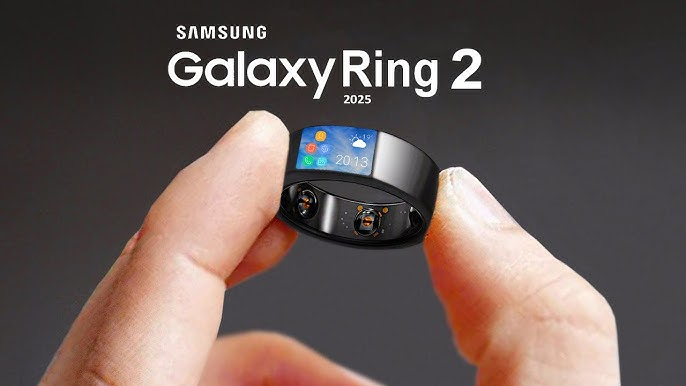

В 2026 году ИИ перестал быть инструментом — он стал полноправным участником научных открытий, художественного творчества и повседневной жизни.
Современные языковые модели достигли уровня, при котором они способны не просто отвечать на вопросы, но и генерировать научные гипотезы, анализировать медицинские снимки с точностью выше среднего врача и писать код, который люди принимают за написанный опытным разработчиком.
+340%
Рост инвестиций в ИИ за 2 года
1.8 млрд
Пользователей AI-сервисов
72%
Компаний внедрили ИИ-решения
Компании по всему миру массово внедряют ИИ-помощников в рабочие процессы. Банки используют нейросети для обнаружения мошенничества в реальном времени, логистические компании оптимизируют маршруты за секунды, а HR-отделы автоматизируют первичный отбор кандидатов.
Вместе с тем растут и этические вопросы: как регулировать ИИ-контент? Кто несёт ответственность за ошибки алгоритма? В ЕС уже вступил в силу «AI Act» — первый в мире закон, классифицирующий искусственный интеллект по уровню риска и требующий прозрачности от разработчиков.
Гаджеты28 февраля 2026
Смартфоны 2026: новая эра
Гибкие дисплеи, спутниковая связь и встроенный ИИ-процессор — флагманы этого года переосмысляют, каким должен быть телефон.
Samsung Galaxy Z Fold 7 и Huawei Mate X5 задали новый стандарт: экраны, способные складываться втрое, батареи на 7000 мАч с беспроводной зарядкой 120 Вт и камеры с оптическим зумом до 200x. Но главная революция — в программном обеспечении.
200x
Оптический зум новых камер
3 нм
Техпроцесс флагманских чипов
7 дней
Автономность при экономном режиме
Встроенные нейронные процессоры теперь позволяют запускать языковые модели прямо на устройстве без интернета. Переводчик в реальном времени, генерация текста, распознавание лиц — всё работает локально, без передачи данных на сервер.
Apple ответила на это анонсом iPhone 18 Pro с революционным чипом M4 Mobile. Впервые в истории смартфон Apple получил 16 ГБ оперативной памяти и поддержку профессионального видеомонтажа в формате 8K прямо на устройстве.
Технологии25 февраля 2026
Гаджеты, которые изменят вашу жизнь
Умные кольца, нейроинтерфейсы и AR-очки — устройства, которые ещё недавно казались фантастикой, теперь можно купить в магазине.

Samsung Galaxy Ring 2 собирает данные о здоровье круглосуточно: пульс, температура тела, уровень кислорода, качество сна и даже стресс по вариабельности сердечного ритма. Всё это анализирует ИИ и даёт персональные рекомендации прямо в приложении.
30+
Биометрических показателей
$3 490
Цена Apple Vision Pro 2
120 г
Вес новых AR-очков Meta
Meta представила Ray-Ban Smart Glasses 3-го поколения — очки весом всего 120 граммов с AR-дисплеем, встроенным ИИ-ассистентом и 12-часовой батареей. Теперь можно получать уведомления, делать фото и видеть подсказки навигации, не доставая телефон.
Отдельного внимания заслуживают устройства для здоровья. Умные пластыри от Withings отслеживают уровень глюкозы в крови без уколов, а наушники Sony WH-1000XM7 теперь умеют адаптировать звук под акустику помещения в реальном времени.
Редакция
Добавить новость
Поделитесь интересной технологической новостью с сообществом. Войдите в аккаунт, чтобы опубликовать материал.